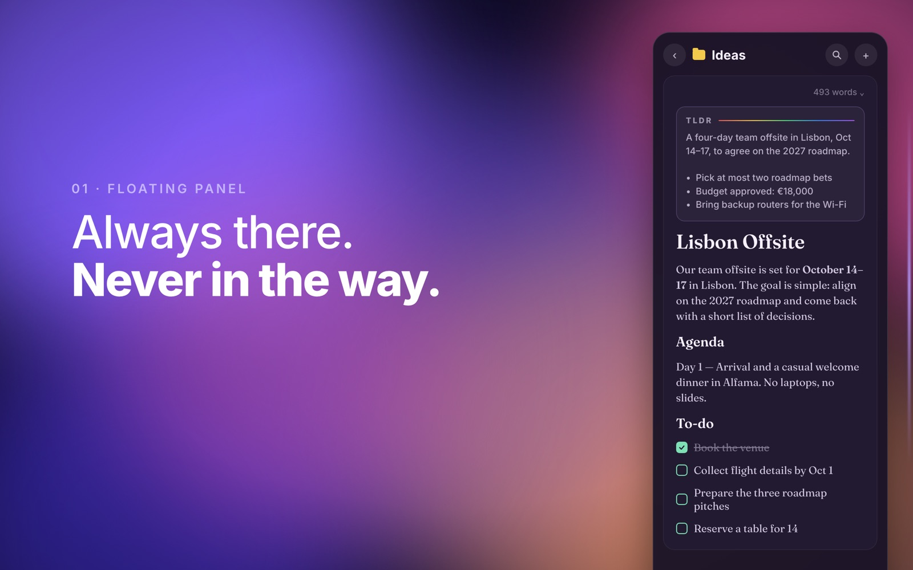

On your Mac, the jar lives on the edge of the screen.
Click the edge and Purr slides in over whatever you're doing, even in full screen. Write the idea down. Click away and it's gone until you need it.

⌘⇧N
Open the panelOr click the edge of the screen.
⌘⇧Space
Capture from any appType the thought, save it, keep working.
⌘K
Ask your notesFrida, an AI on your Mac, answers with sources. The model downloads once, then works offline.
No account. No tracking: the App Store label says Data Not Collected. Free up to 20 notes, with every feature. Pro removes the limit for $4.99, one time. No subscription.
Get Purr on the Mac App StoreFor macOS. Free up to 20 notes, then $4.99 once.